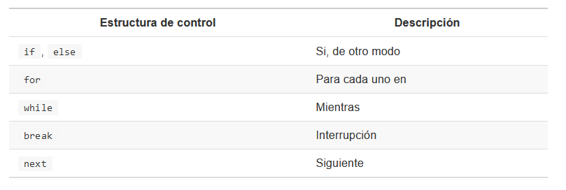

Objetivo
Conocer los principales comandos en la programación en R
Desarrollar diagramas de flujos
Crear algoritmos y opciones avanzadas de manipulación de dataframes
Condicionales
Nos permite controlar la manera en cómo se ejecuta nuestro código (establecen condicionales).
Las estructuras de control más usadas en R son las siguiente:

if, else
if se usa cuando deseamos que una operación se ejecute cuando cumple una condición deseada (Ej. Si esta condición es cierta, entonces haz una operación específica)
else se usa para indicarle a R qué hace en caso de que la condición de un if no se cumpla.
La estructura de un la función if es la siguiente
#if (condicion) {
# proceso_si_se_cumple_condicion
#}Si la condición es verdadera, entonces se realiza la operación. En caso contrario, no se realiza la operación. Veamos algunos ejemplos:
#Se cumple la condición y se muestra "verdadero".
if (19 > 15) {
"verdadero"
}## [1] "verdadero"#Si no se cumple la condición, el código no se ejecuta.
if (10 > 15) {
"verdadero"
}la función else complementa a if, es decir, le asigna un proceso siempre en cuando la condición inicial no se cumpla. En otras palabras, un if con else es la manera de decirle a R:
- SI esta condición es cierta, ENTONCES haz estas operaciones.DE OTRO MODO haz estas otras operaciones.
La estructura de in if con else es el siguiente:
#if (condition) {
# proceso1
#} else {
# proceso2
#}Del ejemplo anterior podemos hacer las siguientes modificaciones:
#Se cumple condición
if (18 > 15) {
"Verdadero"
} else {
"Falso"
}## [1] "Verdadero"#No se cumple condición
if (10 > 15) {
"Verdadero"
} else {
"Falso"
}## [1] "Falso"Para ilustrar el uso de if y else definiremos una función que calcule el promedio de calificaciones de un estudiante y, dependiendo de la calificación calculada, nos devuelva un mensaje específico.
promedio <-
function(nota){
mean(nota)
}
promedio(c(5,8,9,6,5))## [1] 6.6Ahora realizaremos un proceso de tal forma que la función nos muestre si un estudiante ha aprobado o no. Si asumimos que un estudiante necesita obtener 5 o más en promedio para aprobar podemos decir:
- SI el promedio de un estudiante es igual o mayor a 5, ENTONCES mostrar “Aprobado”, DE OTRO MODO, mostrar “Reprobado”.
promedio <-
function(notas) {
media <- mean(notas)
if (media >= 5) {
print("Aprobado")
} else{
print("Desaprobado")
}
}promedio(c(6,4,5,7,5,6))## [1] "Aprobado"promedio(c(3,4,4,4,5,3))## [1] "Desaprobado"If else
La función ifelse() permite vectorizar if, else. En lugar de escribir una línea de código para cada comparación, podemos usar una sola llamada a esta función, que se aplicará a todos los elementos de un vector.
Si intentamos usar if else con un vector, se nos mostrará una advertencia:
# if (1:10 < 3) {
# "Verdadero"
# }El mensaje muestra que la condición sólo es evaluada para el primer elemento del vector 1:10, es decir para 1. Los demás elementos son ignorados.
Por el contrario, con ifelse le indicamos que la condición debe de cumplirse para cada uno de los elementos del vector. Esta función tiene tres argumentos:
un condicional
un valor que indique qué mostrar si la condición se cumple
un valor que indique qué mostrar si la condición no se cumple
vector <- 1:10
ifelse(vector > 5, "TRUE", "FALSE")## [1] "FALSE" "FALSE" "FALSE" "FALSE"
## [5] "FALSE" "TRUE" "TRUE" "TRUE"
## [9] "TRUE" "TRUE"edad <- c(10,15,17,19, 20, 13, 11, 16, 15)
ifelse(edad >= 15, "TRUE", "FALSE")## [1] "FALSE" "TRUE" "TRUE" "TRUE"
## [5] "TRUE" "FALSE" "FALSE" "TRUE"
## [9] "TRUE"#Determinar cual de los números del 1 al 60 son pares y cuales impares ¿que se debe cumplir?
numeros <- 1:60
ifelse(numeros %% 2 == 0, "par", "impar")## [1] "impar" "par" "impar" "par"
## [5] "impar" "par" "impar" "par"
## [9] "impar" "par" "impar" "par"
## [13] "impar" "par" "impar" "par"
## [17] "impar" "par" "impar" "par"
## [21] "impar" "par" "impar" "par"
## [25] "impar" "par" "impar" "par"
## [29] "impar" "par" "impar" "par"
## [33] "impar" "par" "impar" "par"
## [37] "impar" "par" "impar" "par"
## [41] "impar" "par" "impar" "par"
## [45] "impar" "par" "impar" "par"
## [49] "impar" "par" "impar" "par"
## [53] "impar" "par" "impar" "par"
## [57] "impar" "par" "impar" "par"Otro ejemplo más complejo. Solicitamos sólo los números que son exactamente divisibles entre 2 y 3.
numeros <- 1:20
ifelse(numeros %% 2 == 0 & numeros %% 3 == 0,
"Divisible",
"No divisible")## [1] "No divisible" "No divisible"
## [3] "No divisible" "No divisible"
## [5] "No divisible" "Divisible"
## [7] "No divisible" "No divisible"
## [9] "No divisible" "No divisible"
## [11] "No divisible" "Divisible"
## [13] "No divisible" "No divisible"
## [15] "No divisible" "No divisible"
## [17] "No divisible" "Divisible"
## [19] "No divisible" "No divisible"Conocer esta función puede ser particularmente útil para recodificar datos. Por ejemplo:
sexo <- c(0, 1, 0, 0, 0, 0, 0, 1, 1, 0)
sexo <- ifelse(sexo == 0, "hembra", "macho")
sexo## [1] "hembra" "macho" "hembra"
## [4] "hembra" "hembra" "hembra"
## [7] "hembra" "macho" "macho"
## [10] "hembra"Uso de condicionales y estructuras de control en un dataframe
Recordemos que para hacer uso de las condicionales podemos hacer uso de las funciones if, else, if else y/o uso de indexaciones combinado con operadores lógicos y/o relacionales. (https://github.com/AngeloCris/computacionCientifica_2021/blob/master/semana7_8/Semana7-y-8.md).
datosCrangrejo <-
read.table("datos/datos_cangrejos.txt",
sep = ",",
header = TRUE)
datosCrangrejoPara determinar el total de filas de mi data frame usamos la función length.
attach(datosCrangrejo)## The following objects are masked from datosCrangrejo (pos = 3):
##
## C_Length, Month, Sector,
## Sex, Year## The following objects are masked from datosCrangrejo (pos = 4):
##
## C_Length, Month, Sector,
## Sex, Year## The following objects are masked from datosCrangrejo (pos = 5):
##
## C_Length, Month, Sector,
## Sex, Year## The following objects are masked from datosCrangrejo (pos = 6):
##
## C_Length, Month, Sector,
## Sex, Year## The following objects are masked from datosCrangrejo (pos = 7):
##
## C_Length, Month, Sector,
## Sex, Yearlength(datosCrangrejo$Year)## [1] 71013La base de datos muestra los registros mensuales de la longitud y sexo de un cangrejo para el periodo 2008 y 2014. En función a lo mencionado anteriormente, resolvamos lo siguiente.
Crear una columna denominada “sexo” que reemplace las categorías de la columna “sex”. Considere lo siguiente
“F” = “female”
“0” = “ovígera”
#Uso del ifelse
#Para condicionales vectorizados
unique(datosCrangrejo$Sex)
datosCrangrejo$sexo <-
ifelse(datosCrangrejo$Sex == "F", "Females", "Ovigera")
head(datosCrangrejo)
table(datosCrangrejo$sexo)Crear una columna denominada “estacion” que reemplace las categorías de la columna “Month”. Considere lo siguiente:
verano = 12, 1, 2
otoño = 3, 4, 5
invierno = 6, 7, 8
primavera = 9, 10, 11
datosCrangrejo$estacion <- "NA"
datosCrangrejo$estacion[datosCrangrejo$Month %in% c(12,1,2)] <- "verano"
datosCrangrejo$estacion[datosCrangrejo$Month %in% c(3,4,5)] <- "otoño"
datosCrangrejo$estacion[datosCrangrejo$Month %in% c(6,7,8)] <- "invierno"
datosCrangrejo$estacion[datosCrangrejo$Month %in% c(9,10,11)] <- "primavera"
head(datosCrangrejo)## Year Sector Month Sex C_Length
## 1 2013 Sector_1 11 F 123.64
## 2 2013 Sector_1 11 F 118.47
## 3 2013 Sector_1 11 F 115.53
## 4 2013 Sector_1 11 F 113.98
## 5 2013 Sector_1 11 F 108.75
## 6 2013 Sector_1 11 F 106.12
## sexo estacion
## 1 Females primavera
## 2 Females primavera
## 3 Females primavera
## 4 Females primavera
## 5 Females primavera
## 6 Females primavera- Determinar las posiciones de la categoría “primavera” y luego determinar los valores que se asocian a esas posiciones.
#Deseamos extraer las posiciones de las categorías que pertenecen a la estación primavera.
which(datosCrangrejo$estacion == "primavera")
#Extrayendo los valores de las variables de esta categoría
datosCrangrejo[which(datosCrangrejo$estacion == "primavera"),]- Extraer todos los registros de cangrejos que superan la talla media.
media <- mean(datosCrangrejo$C_Length, na.rm = T)
head(which(datosCrangrejo$C_Length > media))## [1] 1 2 3 4 5 6head(datosCrangrejo[which(datosCrangrejo$C_Length > media),])## Year Sector Month Sex C_Length
## 1 2013 Sector_1 11 F 123.64
## 2 2013 Sector_1 11 F 118.47
## 3 2013 Sector_1 11 F 115.53
## 4 2013 Sector_1 11 F 113.98
## 5 2013 Sector_1 11 F 108.75
## 6 2013 Sector_1 11 F 106.12
## sexo estacion
## 1 Females primavera
## 2 Females primavera
## 3 Females primavera
## 4 Females primavera
## 5 Females primavera
## 6 Females primaverahead(datosCrangrejo[datosCrangrejo$C_Length > media,])## Year Sector Month Sex C_Length
## 1 2013 Sector_1 11 F 123.64
## 2 2013 Sector_1 11 F 118.47
## 3 2013 Sector_1 11 F 115.53
## 4 2013 Sector_1 11 F 113.98
## 5 2013 Sector_1 11 F 108.75
## 6 2013 Sector_1 11 F 106.12
## sexo estacion
## 1 Females primavera
## 2 Females primavera
## 3 Females primavera
## 4 Females primavera
## 5 Females primavera
## 6 Females primavera- Extraer todos los registros de cangrejos hembras que superan la talla media.
datosCrangrejo$C_Length > media
which(datosCrangrejo$C_Length > media & datosCrangrejo$sexo == "Females")
head(datosCrangrejo[which(datosCrangrejo$C_Length > media & datosCrangrejo$sexo == "Females"),])- Asumamos que la mínima talla de extracción de la especie de cangrejo sea 110 mm. Crear una columna que identifique si la longitud registrada supera o no la talla mínima.
tmin <- 110
datosCrangrejo$lengthMin <- "NA"
datosCrangrejo$lengthMin <- ifelse(datosCrangrejo$C_Length > 110, ">tmin", "<tmin")
head(datosCrangrejo)## Year Sector Month Sex C_Length
## 1 2013 Sector_1 11 F 123.64
## 2 2013 Sector_1 11 F 118.47
## 3 2013 Sector_1 11 F 115.53
## 4 2013 Sector_1 11 F 113.98
## 5 2013 Sector_1 11 F 108.75
## 6 2013 Sector_1 11 F 106.12
## sexo estacion lengthMin
## 1 Females primavera >tmin
## 2 Females primavera >tmin
## 3 Females primavera >tmin
## 4 Females primavera >tmin
## 5 Females primavera <tmin
## 6 Females primavera <tminBucles
For
La estructura for permite ejecutar bucles realizando una operación para cada elemento de un conjunto de datos, es decir, hace un proceso de iteración.
#la estructura es
#for (variable in vector) {
# proceso
#}Esta estructura le dice a R:
- PARA cada elemento EN un objeto, realice un proceso específico.
Cuando observamos la estructura del bucle, la “variable” puede ser un elemento cualquiera (la podemos llamar como nosotros queramos) pero el objeto “vector” tiene que ser un objeto existente.
Algunos ejemplo:
- Sumarle 2 unidades a cada elemento del objeto “vector” definido líneas abajo:
vector <- 5:10
vector[1] + 2## [1] 7vector[2] + 2 ## [1] 8vector[3] + 2## [1] 9vector[4] + 2## [1] 10vector[5] + 2## [1] 11for (i in length(vector)) {
vector1 <- vector[i] + 2
}
vector1## [1] 12- Si deseamos imprimir vectores con la siguiente forma: “El año es x”, donde x es igual a 1990, 1991, 1992, … , 2020 y 2021. Esto se podría realizar de la siguiente manera:
print(paste("El año es", 1990))## [1] "El año es 1990"print(paste("El año es", 1991))## [1] "El año es 1991"print(paste("El año es", 1992))## [1] "El año es 1992"print(paste("El año es", 1993)) #asi sucesivamente## [1] "El año es 1993"print(paste("El año es", 2019))## [1] "El año es 2019"print(paste("El año es", 2020))## [1] "El año es 2020"print(paste("El año es", 2021))## [1] "El año es 2021"Cuando la longitud del vector x es grande, este proceso se vuelve tedioso. En este caso se recomienda usar un loop en R para que el proceso se repita continuamente.
for (year in 1990:2021) {
print(paste("El año es", year))
}- Calcular el cuadrado de los 10 primeros elementos de un vector u1
#Vector u1
u1 <- rnorm(30)
print("Este loop calculará el cuadrado de los 10 primeros elementos del vector u1")## [1] "Este loop calculará el cuadrado de los 10 primeros elementos del vector u1"usq <- 0
for (i in 1:10) {
usq[i] <- u1[i] * u1[i]
print(usq[i])
}## [1] 0.08651059
## [1] 0.07503881
## [1] 0.0551191
## [1] 0.06486655
## [1] 0.2400917
## [1] 0.082252
## [1] 3.856263
## [1] 1.522862
## [1] 0.8729164
## [1] 0.2084017while
Tipo de bucle que realizará un proceso mientras la condición propuesta sea verdadera.
#while (condicion) {
# operaciones
#}Algunos ejemplos:
- Imprimir el siguiente mensaje “Cuando el valor de inicio sea mayor o igual a 5, detener operación” donde la variable “límite” es igual a 5 y la variable “inicio”, 0.
limite <- 5
inicio <- 0
while (inicio < limite) {
print("Cuando el valor de inicio sea mayor o igual a 5, detener operación")
inicio <- inicio + 1
}## [1] "Cuando el valor de inicio sea mayor o igual a 5, detener operación"
## [1] "Cuando el valor de inicio sea mayor o igual a 5, detener operación"
## [1] "Cuando el valor de inicio sea mayor o igual a 5, detener operación"
## [1] "Cuando el valor de inicio sea mayor o igual a 5, detener operación"
## [1] "Cuando el valor de inicio sea mayor o igual a 5, detener operación"Tener cuidado con crear bucles infinitos! Si se ejecuta el While con una condición que nunca termine, este no se detendrá.
#while (inicio < limite) {
# print("Cuando el valor de inicio sea mayor a 5, detener la operación")
#}- Realizar un proceso iteración (10 veces) donde se muestre el mensaje “Este es el loop número x”. Sea x el número de la iteración.
#Crear una variable con valor 1
inicio <- 1
#Create un loop
while (inicio <= 10) {
cat("Este es el loop número", inicio)
inicio <- inicio + 1
print(inicio)
}## Este es el loop número 1[1] 2
## Este es el loop número 2[1] 3
## Este es el loop número 3[1] 4
## Este es el loop número 4[1] 5
## Este es el loop número 5[1] 6
## Este es el loop número 6[1] 7
## Este es el loop número 7[1] 8
## Este es el loop número 8[1] 9
## Este es el loop número 9[1] 10
## Este es el loop número 10[1] 11- Deseamos conocer el primer número entero positivo cuyo cuadrado exceda a 4000:
#Variable de inicialización
n <- 0
potencia <- 0
#While loop
while (potencia <= 4000) {
n <- n + 1 #definiendo número entero positivo
potencia <- n ^ 2 #definiendo el cuadrado de ese número
}- Suma de dos vectores
x <- c(1, 2, 3, 4)
y <- c(0, 0, 5, 1)
n <- length(x)
i <- 0
z <- numeric(n)
while (i <= n) {
z[i] <- x[i] + y[i]
i <- i + 1
}
z## [1] 1 2 8 5- Extraer un número al azar de una secuencia numérica del 1 al 10 hasta que la suma de sus elementos extraídos sea menor a 50. Indicar el número de iteraciones y la suma resultante.
contador <- 0
suma <- 0
while (suma < 50) {
suma <- suma + sample(x = 1:10, size = 1)
contador <- contador + 1
}En clase se vió un ejemplo en donde los elementos de un vector x correspondían a conteos de animales avistados a lo largo de un transecto. Solicitaban encontrar en punto a lo largo del transecto en que el número acumulado de animales avistados es al menos 50
x <- c(1,0,1,2,1,4,7,2,6,1,8,2,0,3,0,10,8,5,4,5,8,2,0,5,8)
sum <- 0
i <- 0
while (sum < 50) {
i = i + 1
sum = sum + x[i]
print(sum)
}## [1] 1
## [1] 1
## [1] 2
## [1] 4
## [1] 5
## [1] 9
## [1] 16
## [1] 18
## [1] 24
## [1] 25
## [1] 33
## [1] 35
## [1] 35
## [1] 38
## [1] 38
## [1] 48
## [1] 56